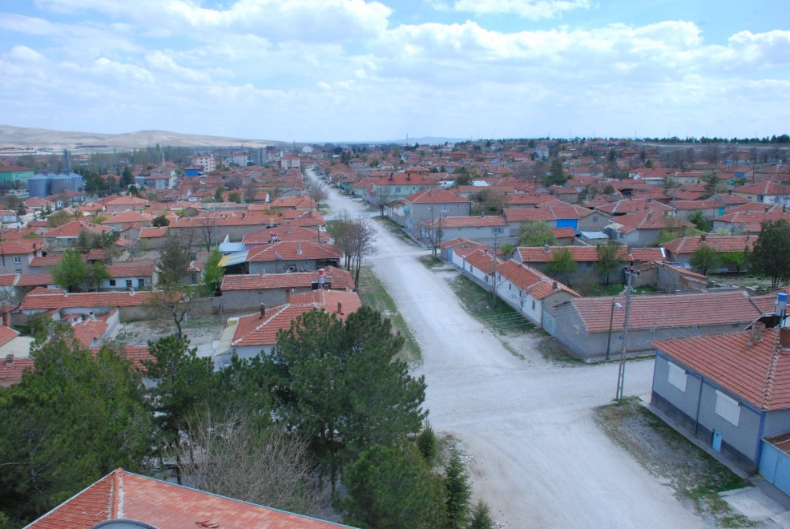
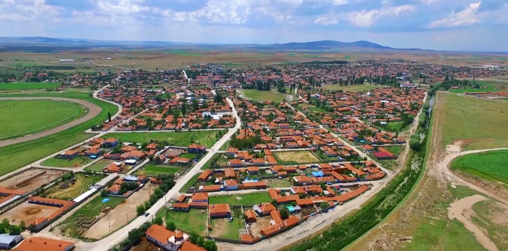

MAHMUDİYE
Mahmudiye, Eskişehir iline bağlı ilçedir. Nüfusu yaklaşık 8 bindir. 1950 yıllarında ilçe olmuştur.
Bünyesinde 15 köy barındıran Mahmudiye'nin en önemli özelliği, T.J.K. harasının burada bulunmasıdır.
Yetiştirilen taylar her sene Mayıs - Haziran aylarında açık arttırma ile satılır.
Taylardan bazıları 150-200 bin YTL fiyatlara satılabilmektedir.
Ayrıca her sene Eylül ayında 1 ay süreyle at yarışları düzenlenmektedir.
Aynı zamanda T.C. Tarım İşletmeleri Genel Müdürlüğü (TİGEM)'in Türkiye'deki en büyük 3 işletmesinden
birisi olan Anadolu Tarım İşletmeleri de bu ilçede bulunmaktadır.
Burada yetiştirilen taylar, at sahiplerine satılarak yarış sahalarında yarıştırılmaktadır.
Anadolu Tarım İşletmesi Türk at yarışı tarihinin en önemli atlarını yetiştirmiş, aygırlarına ev sahipliği yapmıştır.
1998 yılında Tarım Bakanı Mustafa Taşar ve TJK'ye dönemin belediye başkanı
Vahit Karslı ve Anavatan Partisi ilçe başkanı Mustafa Arslan ile yapılan müracaatta
ilçeye hipodrom yapılması konusunda ilk anlaşma yapılmıştır. İlçeye TJK tesisleri kurulmuştur.


Mihalgazi İlçesi Hakkında Bilgi Almak İçin Tıklayınız.